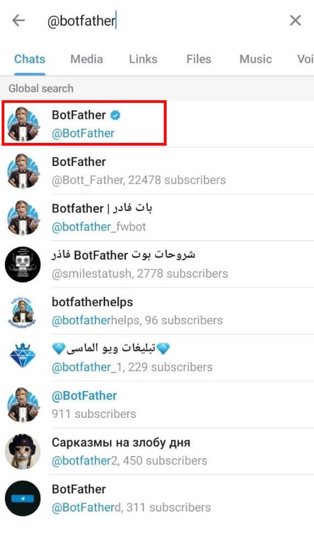
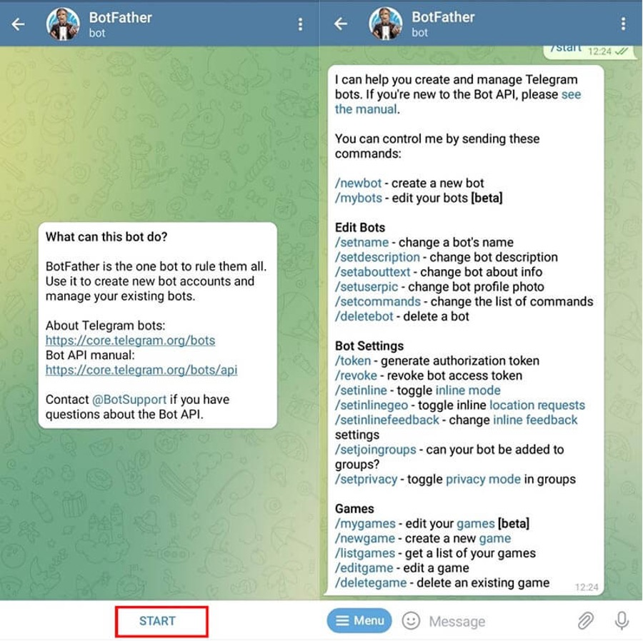
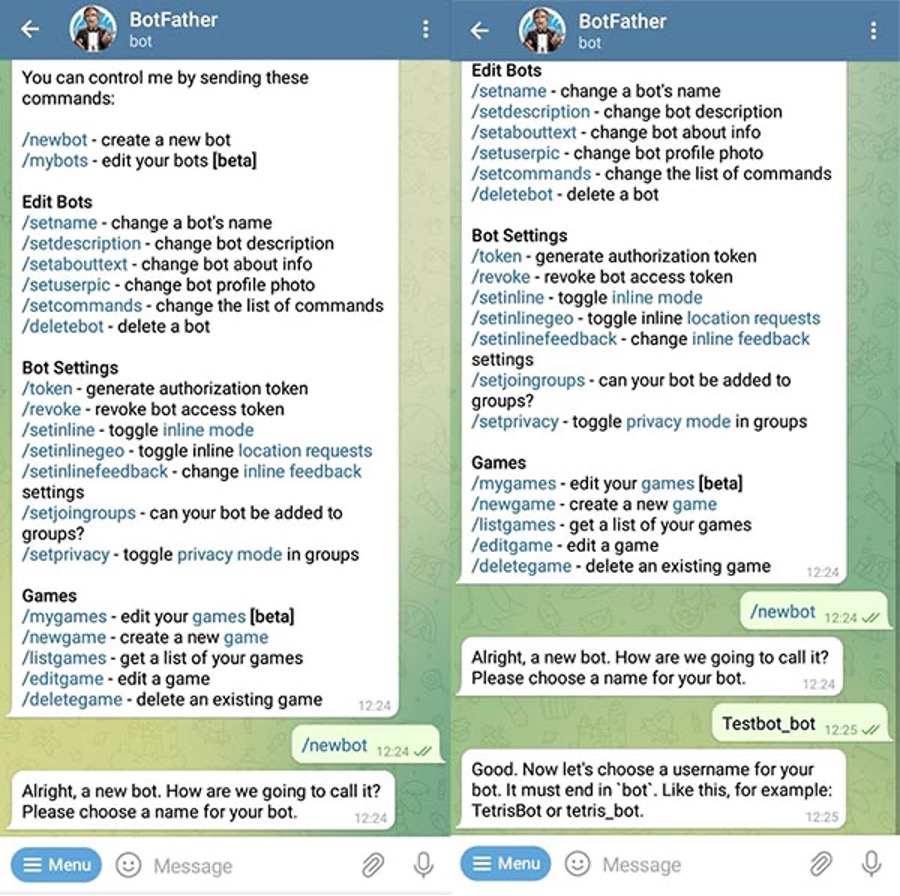
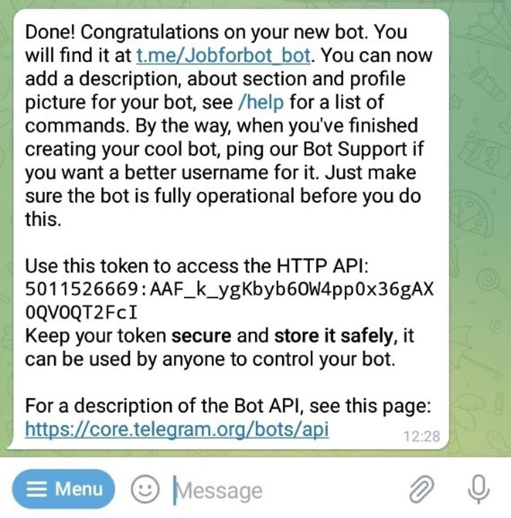

تلگرام به دلیل امکانات و قابلیتهای بسیار عالی، اپلیکیشنی محبوب در میان افراد است. یکی از این قابلیتهای بسیار مهم استفاده از رباتها برای موارد مختلف است. شما میتوانید رباتهای متنوعی با قابلیتهای مختلف از بازی و سرگرمی تا رباتهای پرسش و پاسخ، پیش بینی آب و هوا و … تولید کنید. در ادامه به معرفی و آموزش ساخت ربات تلگرام میپردازیم.
یکی از راه های بازاریابی استفاده از تلگرام می باشد. برای ساخت ربات در تلگرام مراحل مختلفی وجود دارد. ابتدا باید از طریق ربات پدر برای ثبت ربات اقدام نمایید. سپس ربات را فعال کرده و ویژگیهای مختلف برای آن تعریف کنید. نحوه ساخت ربات در تلگرام به این صورت است که ابتدا وارد حساب کاربری تلگرام شوید و در بخش جستجو عبارت botfather را سرچ کنید. گزینه اول را انتخاب کنید تا وارد ربات botfather شوید.
بر روی گزینه start کلیک کنید. در این بخش شما میتوانید ربات جدید ایجاد کرده یا ربات قبلی خود را ویرایش کنید. همچنین امکانات دیگری نیز در اختیار شما قرار گرفته است. بر روی گزینه newbot کلیک کنید.
در این قسمت از شما میخواهد یک نام برای ربات خود انتخاب کنید. نام موردنظر را تایپ کرده و ارسال کنید. در مرحله بعد باید یک نام کاربری برای ربات خود انتخاب کنید. این نام نباید تکراری باشد و در انتهای آن حتما _bot قرار گرفته باشد.
اگر نام کاربری وارد شده مورد تأیید باشد پیغامی به صورت بالا مشاهده کرده و توکن ربات را دریافت میکنید. حال ربات شما ایجاد شده است. طبق مراحل گفته شده ربات شما ساخته شده است.
